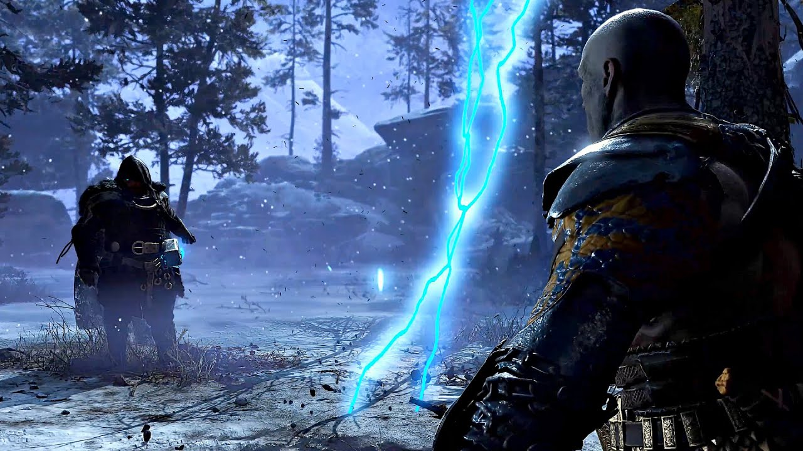

Thor
 Ele é mencionado consistentemente através do jogo como sendo um monstro que matou todos os gigantes para satisfazer sua sede de sangue.
Também é mencionado que Thor lutou com a Serpente do Mundo anos atrás, durante seu massacre de gigantes, mas em vez de emergir vitorioso, a Serpente do Mundo conseguiu escapar. Assim, Thor foi forçado a retornar ao seu pai Odin de mãos vazias. Como resultado, Thor e a serpente do mundo se odiaram desde então. Também é dito que a rivalidade deles não terminará até a chegada do Ragnarök.
Kratos e Atreus, mais tarde, conhecem o espírito de um discípulo de Thor, que deseja vingança de Thor por ter sido injusto com sua família. Depois que seu pai morreu, sua mãe construiu uma estátua de Thor para vigiar a sepultura e ficaram surpresos quando o próprio deus veio oferecer condolências. Embora a princípio emocionados, Thor se aproveitou da hospitalidade da família. A mãe teve que implorar para ele ir embora, mas, bêbado e furioso, Thor a assassinou. O homem viveu em pesar até que, finalmente, o luto se transformou em raiva. Antes que ele possa sair de Midgard para começar sua busca por vingança, ele pede que a estátua seja destruída, e qualquer valor no túmulo de seu pai pode ser saqueado com sua bênção. Em seu barco, Kratos usa a história do homem para lembrar seu filho de uma lição importante: a vida dos homens não significa nada para os deuses.
Thor só aparece no final do jogo num sonho sobre o futuro, no qual, enquanto Kratos e seu filho estavam dormindo, Thor ataca a casa com raios e invoca uma tempestade enorme para acordar Kratos e Atreus e forçá-los a sair e confrontá-lo. Quando Kratos exige que ele revele sua identidade, Thor ergue sua capa, revelando seu martelo que emite eletricidade, e os ataca, como é dito por Atreus depois que ele acorda do sonho, possivelmente para vingar seus filhos e seu irmão que eles mataram.